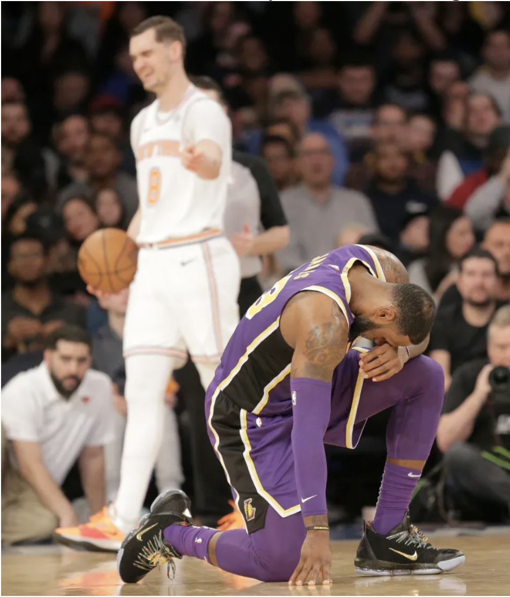

LeBron James is Still Human: Why the Lakers are Missing the Playoffs
For the first time in fourteen years, LeBron James will not be in the playoffs. Coming off of eight straight NBA Finals appearances, most people believed that LeBron would be able to lead the Lakers to at least a…